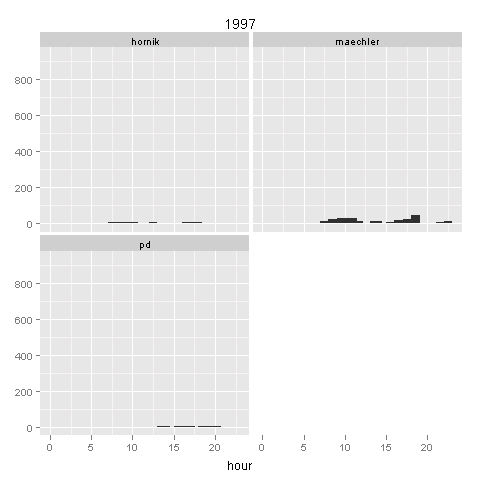
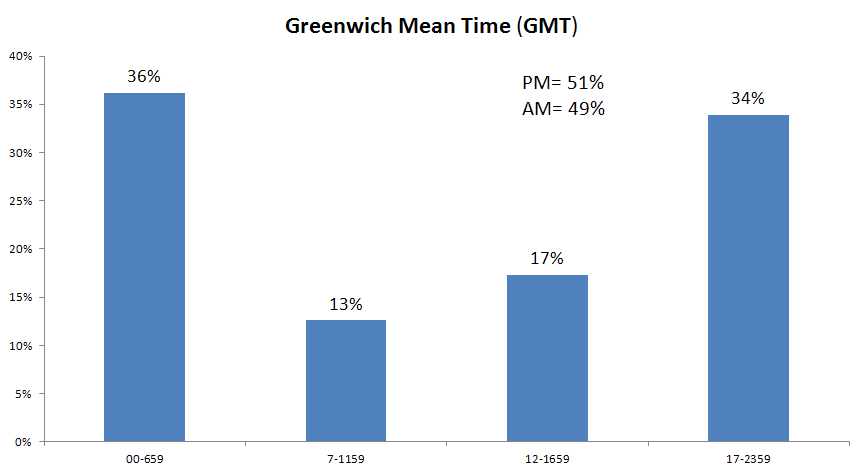
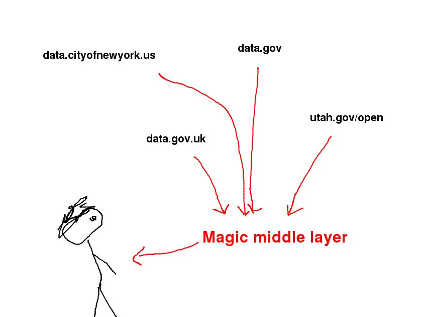

Cool things happen when you look at lots of spreadsheets at once
Here are some materials for my talk at Open Austin, but they’re written in normal language, so they’ll probably serve as a decent summary of my work thus far to people who are reading this on the internet.
Before we start: Why I can be here.
https://github.com/tlevine/undervalued-sublets
Outline of the talk
Introduction
- What are “open data”? Show the video.
- Data about open data, data-driven open data
Two approaches
- We have all of these data, so something interesting must be in it.
- We are interested in something. Let’s collect data that will tell us about that thing.
How I collect these data
- Downloading the data
- Looking inside the various datasets
- Representing all the spreadsheets as one spreadsheet
Cool things that happen
- Better ways of searching
- Dealing with bad (meta)data.
- Quantifying data quality
- Causal inferences: Do open data do anything?
Introduction
Let’s talk about some things I’ve been learning about open data. For the longest time, I had no idea what people meant when they were talking about “open data”, and I think that’s part of why I started looking at the stuff. So now I have a bit of an idea of what the open data thing is.
“Open data”
This video summarizes pretty well most of the good things people say about open data, at least for government data. But I think this sort of thinking makes open data seem way to complicated.
Sharing
Sharing is usually good, and I think that’s the heart of what everyone likes about “open data”, and we have a word for it because people aren’t used to this idea. But when the thing that we’re sharing is complicated and sometimes-private numbers, useful sharing gets hard. This happens when you’re trying to share with the whole world, but it also happens when you’re trying to share within a small company.
We want to share, but we’re not very good at it, and this open data stuff is part of our attempt to get better at sharing.
Recursive data-driving
One benefit of open data might be the ability for people to use lots of different datasets in order to make data-driven decisions. The people who are releasing open data surely get this, so they’re obviously using data to make decisions about their open data initiatives, right?
Actually, they’re not, so I started doing that. Also, I’m doing it quite publicly, so you could say this is open data about open data.
My process and findings
I was taught in school that you come up with your question and then collect data that perfectly answer that question. This way works, but you can often learn more faster and with less work if you’re a bit sloppier.
I like to think of two approaches of deciding what to study.
- We have all of these data, so something interesting must be in it.
- We are interested in something. Let’s collect data that will tell us about that thing.
I think the former is more obvious: Initially, I found it quite odd that nobody had looked at the data about the data. So I did.
Let’s talk a bit about the latter. Let’s say we want to study someone’s sleep patterns. In order to do this, we wind to find out when the person is sleeping. We could do this by having the person record on paper the times at which she goes to sleep and wakes up, but that would be a lot of work. Other ideas


If the person is me, we can use shell history activity.
#!/bin/sh
# This file is history.sh
for epochtime in $(grep '^#[0-9]\{10\}$' ~/.history/sh-2013-1[12]*|cut -d\# -f2); do
date --date=@$epochtime +%H
done | sort | uniq -c | awk '{print $2, "%"$1"s"}' > /tmp/formatted
while read line; do
# Remove the first space
nospace=$(echo $line | sed 's/ //')
printf "$line\n" | tr \ -|sed s/----------------------------------------/=/g|sed -e s/-//g -e 's/=/ =/'
done < /tmp/formatted
Here’s the resulting histogram.
$ ./history.sh
00 =========
01 =======
02 =====
03 ====
04 =======
05 ============
06 ======
07 ====
08 =
09 =
10 =====
11 ===
12 ==
13 ======
14 =====
15 ======
16 ==============
17 ==============================
18 =======================================
19 ============================
20 ===============
21 ==========
22 ==================
23 ==================
Note that these times are in UTC because that’s how I roll.
In this approach of deciding what to study, the idea is that we can answer our curiosities by building on some existing data collection. These brief thoughts on brainstorming might be of interest.
Collecting the data about data
First I download a bunch of spreadsheets and spreadsheet metadata. Then I assemble all this stuff into a spreadsheet about spreadsheets. In this super-spreadsheet, each record corresponds to a full sub-spreadsheet; you could say that I am aggregating each spreadsheet to produce a few statistics that get put into this spreadsheet.
Downloading
Data catalogs make it kind of easy to get a bunch of spreadsheets all together. The basic approach is this.
- Get all of the dataset identifiers.
- Download the metadata document about each dataset.
- Download data files about each dataset.
I’ve implemented this for the following data catalog softwares.
- Socrata
- CKAN
- Junar (kind of)
- OpenDataSoft
This allows me to get all of the data from most of the open data catalogs I know about.
Let’s walk through how that works for the different softwares.
Socrata
In Socrata, I hit the /api/views endpoint to get all of the datasets.
(They’re spread across different pages, but they’re all returned.)
http://data.austintexas.gov//api/views?page=3
All of the metadata are returned in the search results, so this also accomplishes the second step of downloading the metadata documents.
That said, you can also download the metadata documents separately; here’s one of them.
https://data.austintexas.gov/api/views/5tye-7ray
Most datasets in Socrata Open Data Portal correspond to spreadsheets, and
you can download those by appending /rows.csv?accessType=DOWNLOAD.
https://data.austintexas.gov/api/views/5tye-7ray/rows.csv?accessType=DOWNLOAD
It took me a while to figure all of this out, so a lot of what I was doing over the summer was writing documentation.
CKAN
Someone wrote a good CKAN client, so I use that to download the CKAN stuff. This is how I get a list of all the dataset identifiers.
#!/usr/bin/env python
import ckanapi
portal = ckanapi.RemoteCKAN('http://data.gov.uk')
datasets = portal.action.package_list()
That only provides the identifiers, so I continue with the following code to get the metadata documents.
for dataset in datasets:
dataset_information = portal.action.package_show(id = dataset)
Here’s an example of one such metadata file.
Most datasets on CKAN catalogs link to other websites for the main “data” files, and the links are stored in the matadata files.
Junar
In Junar, it’s hard to get a list of all of the datasets. You can do a search like so.
http://paloalto.cloudapi.junar.com/datastreams/search?query=grapefruit&auth-key=da782fcac90afb0a310f72a4f63baff6d26fc0b1
Well at least that used to work. It seems that that API key doesn’t work anymore.
I’m pretty sure that the rest of the process works just fine once you have a dataset identifier, but I don’t remember how that all works at the moment.
OpenDataSoft
In OpenDataSoft, you can run an empty search to get the metadata about all of the datasets in a single file.
http://parisdata.opendatasoft.com/api/datasets/1.0/search?rows=1000000
Like with the other softwares, you can also get the metadata about a specific dataset; here’s a URL for that.
http://parisdata.opendatasoft.com/api/datasets/1.0/arbresremarquablesparis2011
Each dataset corresponds to a spreadsheet, and you can download that by
adding /download?format=csv to the above URL.
http://parisdata.opendatasoft.com/explore/dataset/arbresremarquablesparis2011/download?format=csv
Looking inside datasets
A statistic is a single number that describes a bunch of numbers.
4
2
8 --mean--> 5.8
12
3
I create statistics about each dataset.

Putting them in a spreadsheet
Combining the metadata and the new dataset statistics, I create a spreadsheet of datasets, in which each record corresponds to a dataset.

Cool things
- Better ways of searching
- Dealing with bad (meta)data.
- Quantifying data quality
- Causal inferences: Do open data do anything?
(They’re really all the same thing, actually.)
Searching
Many people know about datasets that are relevant to their work, municipality, &c., but nobody seems to know about the availability of data on broader topics, and nobody seems to have a good way of finding out what is available. And nobody has a great idea of who is using which data. Here are two aspects of the difficulty.
- Naive search method
- Siloed open data portals
(Read more here.)
Search method
We search for prose by typing prose into a search bar; why don’t we search for spreadsheets by typing spreadsheets into a search bar? Aside frorm finding datasets that contain particular keywords, here are some other ways we could search.
- Datasets that were produced by the same program as this dataset
- Datasets that I can join to this dataset
- Datasets that pertain to this particular geographic region
- Datasets in long format (rather than wide format)
Here are some things that might get you thinking about the possibilities.
- http://appgen.me/audit/report
special_snowflake- Group by an arbitrary key, aggregate, join. The most common column in New York City’s data catalog was zip code. The zip code dataset!
Siloed data catalogs.
Different people put out their datasets on their own websites. These sites work as a way of getting the data on the internet, but they aren’t really designed for accessing data around a specific analytical inquiry. For example, if I want to know where in Austin to build a house, I don’t necessarily just data from the City of Austin; I might want data from other cities, from the county, or from the state.

I made a rather simple site to demonstrate this idea.
Dealing with bad (meta)data
People complain about how data are bad and metadata are bad. Rather than fixing it on a case-by-case basis, I think we should just come up with ways of dealing with it.
Missouri provides a good illustration of this. The titles of datasets are related to the contents of datasets.
You can see my alternative search approaches as ways of guessing metadata.
Quantifying data quality
- Open Knowledge Foundation Open Data Census
- Tim Berners-Lee Five Stars of open linked data.
- Open Government Working Group 8 Principles of Open Government Data
- Sunlight Foundation Open Data Policy Guidelines
- Open Data Institute Certificates
Licensing
I looked at the licenses that different datasets have.

Most data catalogs either have a license on everything or a license on nothing.)

Licensing is important because it reduces uncertainty.
Updating
Open government data are supposed to be kept up-to-date. Pretty much nobody does this.
Getting the data
Socrata has some date fields in the metadata, so I could look at the update behavior.
First, hardly any datasets ever get updated.

Second, the ones that have been updated were mostly updated two years ago. There might have been some bulk Socrata migration at the beginning of September 2011.

Here are the datasets that got published before 2013 and got updated during 2013.

It’s only 13 datasets.

Data are probably being updated thorugh other means,
- Adding new data as a separate dataset (a 2011 dataset and a 2012 dataset)
- Deleting the old dataset and adding a new one
but these aren’t as good because they don’t preserve URIs.
Causal inferences: How things work
It would be great to tie the release of spreadsheets to outcomes that people really care about, like levels of corruption, life expectancies, and employment rates. But that’s hard, so I’m starting simpler; we can start by seeing what different software products do.
What do I mean by different products? Any of the below things would count.
- Different features within a product
- Different vendors (Socrata, Open Knowledge Foundation, Junar, OpenDataSoft, &c.)
- Different plugins and extensions
- Different products and services sold by one company
This can be framed as practical questions like “Which data catalog software should I use?”
Charting tools
These open data catalog softwares all have charting tools built in. Basically, people don’t use these charting tools all that much.
The Socrata metadata indicate the users that updated the data. Most of the users in the dataset (7790 to be exact) had made exactly one view.

Actually, there are probably even more with no views, but I don’t have the data on them. Also, about four-fifths of Socrata’s data is private, (Several people who work for Socrata have told me this.) so I’m probably missing even more. Oh well.
Similarly, the users who have owned and authored the most tables tend to work for either Socrata or clients of Socrata.
Neither of these discoveries should be a surprise; you can call it the Pareto principle if you want.
Socrata is trying to “consumerize” the data experience, so I tried to find users who were not employed by Socrata or its clients. I eventually found some.
As I said above, my main conclusion is that people don’t use these charting tools all that much. More specifically,
- The people who create the most charts are people who maintain data portals
- Aside from those who maintain data portals, the people who create the most charts are usually making different charts of the same data.
- I found a small number of people who seem to be using the charts for broader things. I haven’t really talked to any of them, but the little I do know of their stories is interesting.
- All of the data catalog softwares have charting tools like this. Socrata’s is the most built-out, so I doubt that we’ll see more usage in other sites’ charting tools.
If you are making a data catalog for your organization, I recommend that you not worry about including data visualization things in the catalog.
Links
Links can go dead. I looked at dataset liveliness for Socrata and CKAN.

In Socrata, datasets tend to be stored in the Socrata application and strongly associated with the entity on the data portal. All of these internally stored datasets stay alive (presumably). There are a few externally stored datasets, and some of those are dead.
In CKAN, datasets tend to reference external files, and a lot of them are dead. That said, it seems to be better at keeping external links alive than Socrata is.
This difference totally makes sense if you look at the processes for uploading data.
We can also see what sorts of problems are arising.


Read more here
Final thoughts
- Ways of inquiring
- Question to data
- Data to question
- Open data is about sharing.
- You can collect data about data.
- You don’t really need to distinguish between metadata and data.